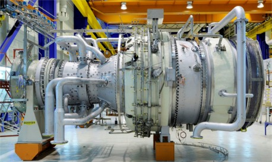

Краткая характеристика гузотурбинного двигателя SGT-800
 Промышленная газовая турбина SGT-800 компании Siemens сочетает в себе надежность промышленной конструкции с высоким КПД и низким уровнем выбросов, достигаемым за счет применения новейших разработок в газотурбиностроении.
Разработанный для применения в тяжелых условиях эксплуатации, газотурбинный агрегат SGT-800 обеспечивает особенно конкурентоспособные экономические показатели для широкого круга заказчиков в области промышленного производства электроэнергии – энергетических компаний, независимых производителей электроэнергии, инфраструктурных и муниципальных энергосистем.
Высокая температура выхлопных газов турбины SGT-800 в сочетании с ее высоким КПД делает ее характеристики непревзойденными для использования в схемах когенерации, а также в парогазовых установках, включая предприятия обрабатывающей промышленности и теплофикационные системы.
Турбина SGT-800 оборудована эффективной двухтопливной системой сухого подавления выбросов («DLE»), которая позволяет свести к минимуму выбросы NOx и обеспечить соблюдение как мировых, так и региональных норм, регламентирующих выбросы.